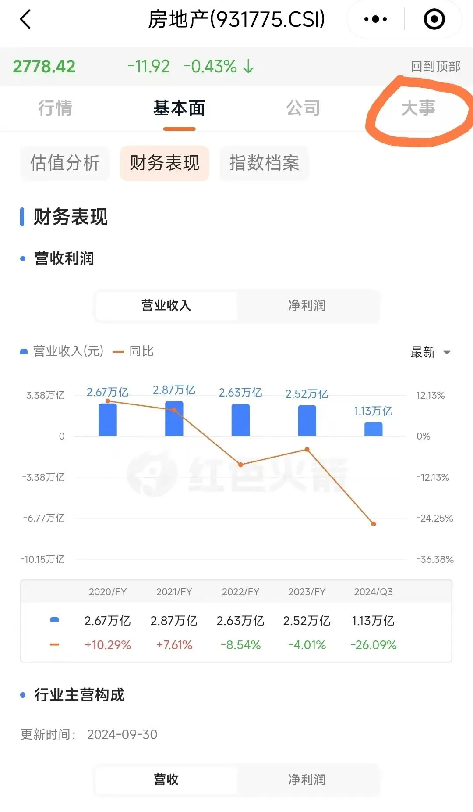
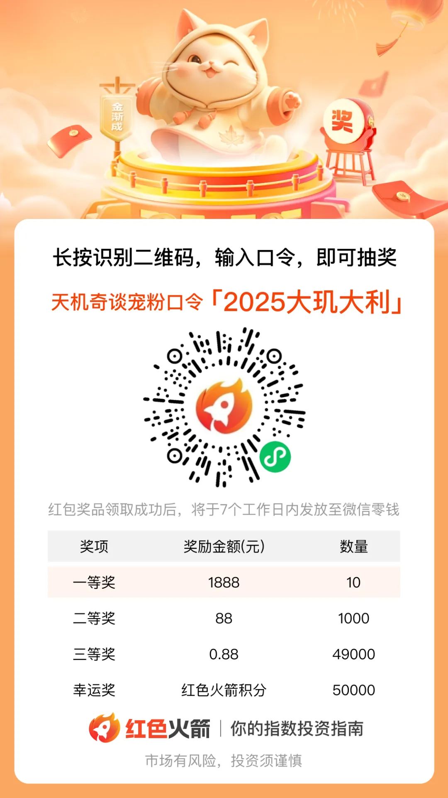

抽15万红包啦
每年发放红包的日子又到了， 往年的金额是5 万， 今年是15万。
多出来的10万，是之前说“如果万科比龙湖先暴，我发10万”，哈哈，眼瞅着万科差不多了，而且我今年投资收益很不错，索性提前发了。
由于往年用的抽奖软件有问题，不好用。所以这次找了一个新的： 红色火箭，一个专门服务指数基金投资的小程序 。
刚好这个小程序我自己平时也在用，而且 两个月前已试过发放小红包，体验感相当不错 。 因此就找他们谈，希望能借用他们的平台发放红包，他们提供技术支持。
结果 他们也 希望抽奖活动放他们平台上进行 ，挺 够意思的。
作为反馈，咱也介绍一下这次提供支持的小程序“ 红色火箭 ”， 这是一个专门服务指数基金投资的小程序：
一个很好用的 免费工具 ， 大到宏观政策、小到各行业、公司的基本面等，如公司的整体估值、盈利能力、行业地位...在这里大多能看到，可在这里“一站式”集中阅览行业的关联信息。
以多数人关注的房地产行业为例，房地产行业的财务状况（营收及降幅、净利润及降幅等）等基本面，以及行情、 行业的重要大事、资讯、政策解读 。如：

平时出什么政策了，我会用它来看看 资本市场的行业和信心指数，追踪行业的景气指数，判断市场对政策的信心。
平时多观察指数，有助于更好地把握机会。
我个人有炒股，平时买ETF指数基金时，会用它查指数的估值、涨跌、换手率、资金动向......
可以看行情，找机会，选指数，还可以看到影响指数的热点新闻。
有对指数整体的估值功能，可以看到所查指数比过去时间贵或便宜；
还有 “指数对比功能”， 把不同的指数放一块，对比它们的业绩走势、成分股、规模， 可以一键组队对比两个相似指数之间的风格差异和优劣，挺好用的；
有“热股选指数”，可以通过当日的热门个股（涨停股、资金流入股、龙虎榜个股）筛选出相似的指数产品，可以借助个股快速发现指数投资的热点；
以及不同指数都有哪些ETF可以买； 也 可以是对某只热门股感兴趣，反向找到那些指数包含它；
红色火箭还可以跳转到微信的“理财通”交易，点击相应指数基金就可以进入理财通，链路很短挺方便。
另外，很多读者知道我有炒美股，平时也会问一些问题。我自己是经常用这个小程序来看看国内QDII的产品：
如纳指 ETF这类产品的溢价率和净值，目前溢价率普遍在8-9%左右，根据溢价率等来 判断风险高低 。
红色火箭这个专门服务指数基金投资的小程序，我个人觉得挺好用的，你们有兴趣可以多研究一下。
... ...
开始抽奖：
结 果是系统随机分布， 全凭运气，红包数5 万余 个：一 ** 等奖1888元（10个）、二等奖88元（1000个）、三等奖0.88元（49000个），合计15万元， ** 抽完为止。
另有 幸运奖（参与奖）积分50000份 ，积分积攒到一定程度， 可在小程序中兑换微信红包， 兑换路径：红色火箭-活动中心-积分兑好礼。 详见小程序内具体说明。
活动的 有效时间是1月10日20点至1月11日20点 ，过期无效，同一用户（同一手机号、微信号等视为同一用户，详细规则可查看活动页面）只能参与抽奖1次。 用户可在小程序「活动中心」-「红包明细」页面，查看中奖信息。
用手指按住下方图片，识别上面的二维码 ， 就可以进入红色火箭小程序中，参与抽奖。 登陆上去后输入口令“ 2025大玑大利 ”，输入口令在弹出页面记得点“领取”，会 即时开奖：

关于领奖事宜，这里详细说明一下：0.88元和88元的红包在点击领奖后，会在 7个工作日内 自动发送至微信零钱，无需操作；
1888元的10位读者，请保留好中奖截图，保持手机畅通，会有 工作人员（手机尾号5787/3474/6043） 在3个工作日内电话联系 你，随后 会使用 认证标识为“@红色火箭”的企业微信联系发奖 ， 核对时需要向工作人员提供中奖截图。
ps： 因为微信 红包限额的原因 ，单个的上限是200元，所以低于200元的可以直接发， ** 高于200元的10个1888的大奖，就需要人工发放 ** 。
根据微信零钱相关政策，发放过程中可能遇到单日额度限制，导致奖励延迟发放或未能成功发放。若未及时到账，可访问小程序「活动中心」-「红包明细」页面，查看活动领奖信息，并再次点击领取，15个工作日内操作均有效。
大致就这些，祝大家都能中奖。
提前祝大家：2025大玑大利~
ps：天玑星，北斗七星第三星，主理天上和人间的财富，又名禄存星，喻为财富之星。祝愿新的一年，大家健康且都被禄存星眷顾~
就这样。
按日期浏览全部来源（同日按条目标识排序）